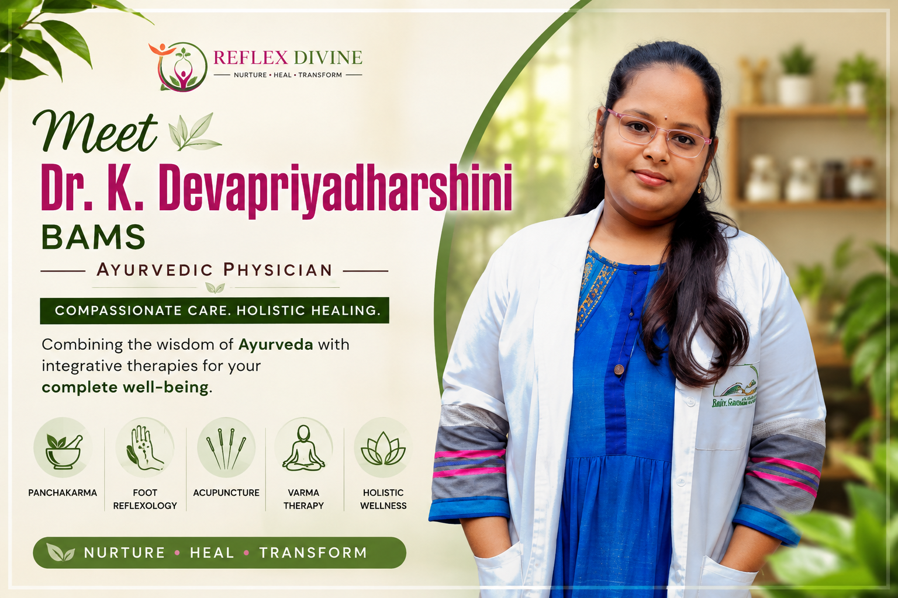

Dr. K. Devapriyadharshini, BAMS – Compassionate Ayurvedic Physician Dedicated to Holistic Healing

Introduction
Dr. Devapriyadharshini BAMS, an Ayurvedic physician committed in restoring health through a combination of Ayurvedic wisdom and modern holistic healthcare, Her experience in Panchakarma, Foot reflexology, Varma therapy, and integrative wellness.
Educational Journey in Ayurveda
Bachelor of Ayurvedic Medicine and Surgery (BAMS) at Rajiv Gandhi Ayurveda Medical College & Hospital, affiliated with Pondicherry University.
Hands-On Clinical Experience
- Government Hospital, Mahe
- Health & Wellness Centre, Murungapakkam
- Rajiv Gandhi Ayurveda Medical College & Hospital
Expertise in Panchakarma Therapies
- Vamana
- Virechana
- Basti
- Nasya
- Raktamokshana
Integrative Healing Approach
- Foot Reflexology
- Varma Therapy
- TCM Acupuncture
- Yamamoto Scalp Acupuncture
- Pranic Healing
- Yoga & Pranayama
- Varma thokkanam
- Lifestyle and dietary guidance (Pathya & Apathy)
Professional Skills
- Clinical assessment
- Treatment planning
- OP/IP management
- Panchakarma
- Ayurvedic medicine preparation
- Holistic wellness
- Lifestyle counselling
- Traditional therapies
- Basic & Soul Pranic Healing
- Cancer Care Program
Philosophy of Care
Dr. Devapriyadharshini believes that healing extends beyond addressing symptoms. Her approach focuses on understanding each individual’s physical, mental, and lifestyle factors to support overall well-being through personalized Ayurvedic and holistic care.
Why Patients Choose Dr. Devapriyadharshini
- BAMS-qualified Ayurvedic physician
- Extensive clinical internship
- Panchakarma experience
- Holistic wellness therapies
- Integrative healing approach
- Experience: 5,000+ Patients Seen
- Continuous professional development
Specializations
- Prasuti Tantra (Obstetrics) – Women’s health, pregnancy care, and maternity-related wellness.
- Stri Roga (Gynecology) – Comprehensive gynecological care and women’s health concerns.
- Eye Care – Holistic support for eye health and related wellness concerns.